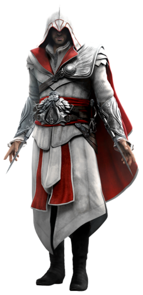

.
.
Ezio was born in Firenze on June 24, 1459, as the second eldest child of Giovanni and Maria Auditore. Although he appeared to be stillborn at first, he began crying after some words of encouragement from his father. Giovanni remarked on the boy's "fine set of lungs" before proudly raising him in the air, naming him Ezio Auditore da Firenze.Until the age of 17, Ezio lived a life of contentment and luxury as a member of the Florentine noble class. He was apprenticed to renowned banker Giovanni Tornabuoni, who worked alongside Giovanni Auditore's banking business, but was all the while unaware of his father's allegiance to the Assassin Order.[1]One day in 1476, Ezio spotted the beautiful Cristina Vespucci and, encouraged by his older brother Federico, introduced himself to her. Because of his awkwardness, she was not particularly impressed and declined to give him her name before departing. Nonetheless, Ezio followed Cristina home, where she was confronted by Vieri de' Pazzi.Cristina repeatedly rejected his advances, but Vieri ignored her and prepared to force himself on her, at which point Ezio intervened. The two men began a fistfight, with Ezio emerging victorious. Vieri swore vengeance against Ezio before running off, and Cristina thanked Ezio for helping her. She introduced herself to Ezio and kissed him, with a relationship eventually blossoming between the two.After Ezio finished his chores, he was summoned by Giovanni, who asked him to deliver two letters to contacts of his in the city and retrieve a third letter from a nearby pigeon coop. Ezio complied, although two odd encounters with Giovanni's contacts left him confused. As he retrieved the note from the pigeon coop, Ezio witnessed a group of guards running across Florence.Returning home, Ezio found his house ransacked, his father and brothers missing, and his mother and sister hiding. The house maid Annetta, not recognizing Ezio at first, tried to strike him with a frying pan, but missed. She informed Ezio that the city guards arrested his father and brothers, and brought them to the Palazzo della Signoria. Ezio decided to pay them a visit, but was told to avoid the guards, as they had a warrant for his arrest as well.[1]Climbing the Palazzo and speaking to his father through the window of his cell, Ezio was instructed to find a hidden chest in his office, take everything out of it, and deliver a sealed letter to Uberto Alberti, Gonfaloniere of Florence and a close friend of the Auditore family.